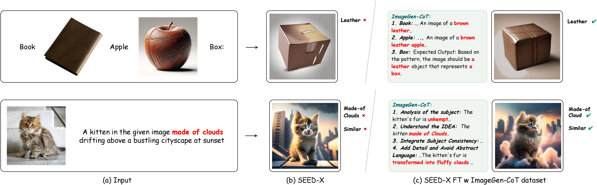
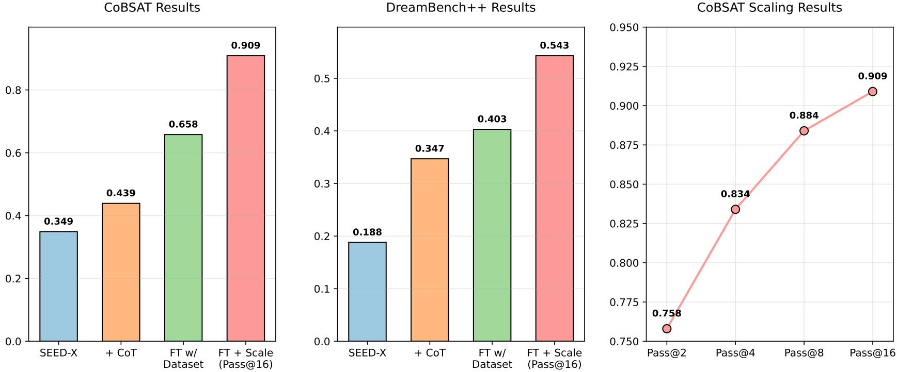
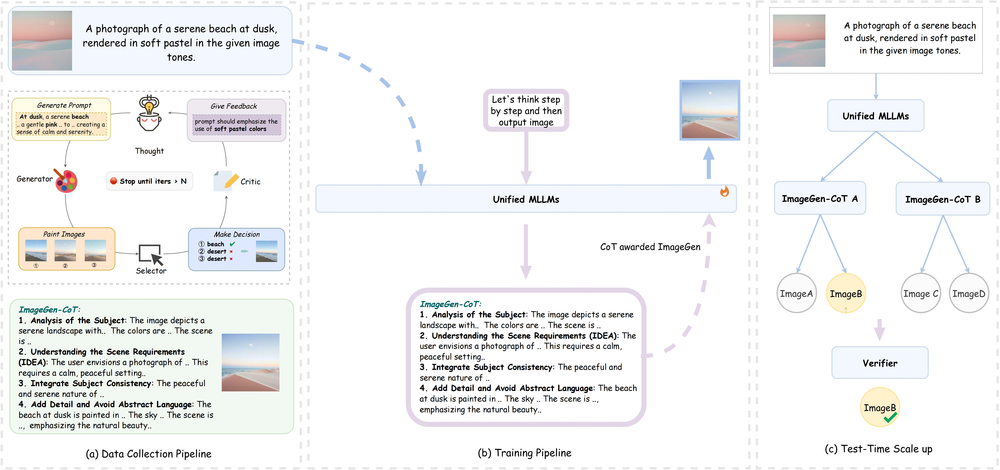
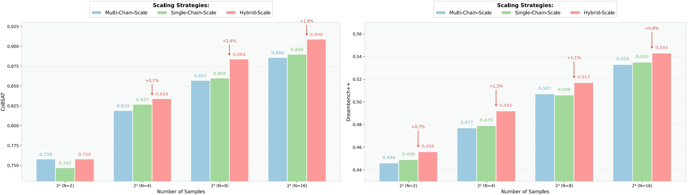
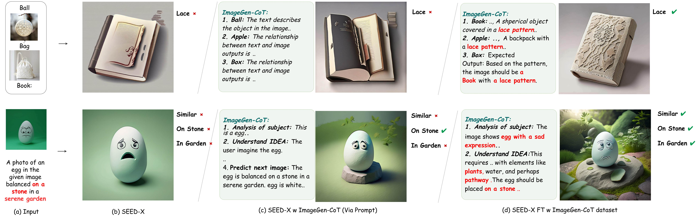

Enhancing Text-to-Image In-context Learning with Chain-of-Thought Reasoning
We propose a novel framework that generates a thought process (called ImageGen-CoT) to enhance the performance of unified MLLMs in T2I-ICL tasks. Our contributions can be summarized as follows:
🎯 Chain-of-Thought Prompting
We propose a novel framework that incorporates a thought process called ImageGen-CoT prior to image generation in T2I-ICL tasks.
📊 FT w ImageGen-CoT dataset
We construct high-quality ImageGen-CoT datasets for fine-tuning unified MLLMs through an automatic dataset construction pipeline.
⚡ Efficient Scaling Strategy
We explore Best-of-N test-time scaling up paradigms and propose a hybrid scaling approach that first generates multiple ImageGen-CoT chains and then generates multiple image variations per chain.
Background
Human intelligence excels at learning novel concepts through contextual observation and adapting to new inputs. When presented with a series of interleaved text-image examples—such as "a leather-bound book," followed by "a leather apple"—and then asked to generate an image for the query "a box," humans intuitively infer the implicit pattern of "leather" and apply it to the new query, resulting in "a leather box." This reasoning ability to learn novel concepts from multimodal contexts underpins creative problem-solving. Existing unified Multimodal Large Language Models (unified MLLMs) have demonstrated remarkable capabilities in multimodal understanding and generation within a single model architecture. Given their ability to process and generate across modalities similar to human cognition, it is natural to investigate whether these models can exhibit reasoning capabilities comparable to those of humans. To evaluate this, we adopt the Text-to-Image In-Context Learning (T2I-ICL) task, which requires models to process interleaved text-image inputs and generate coherent outputs by learning from multimodal contexts (Figure 1). Despite the impressive capabilities of unified MLLMs, our experiments reveal that they struggle to replicate this reasoning capability, often failing to grasp contextual relationships or preserve compositional consistency in T2I-ICL tasks.

Figure 1:Comparisons between SEED-X and SEED-X FT w ImageGen-CoT dataset.
Contribution
We propose a novel framework that generates a thought process (called ImageGen-CoT) to enhance the performance of unified MLLMs in T2I-ICL tasks. Our contributions can be summarized as follows:
1. Chain-of-Thought Prompting: We propose a novel framework that incorporates a thought process called ImageGen-CoT prior to image generation in T2I-ICL tasks.
2. FT w ImageGen-CoT dataset: We construct high-quality ImageGen-CoT datasets for fine-tuning unified MLLMs through an automatic dataset construction pipeline.
3. Efficient Scaling Strategy: We explore Best-of-N test-time scaling up paradigms and propose a hybrid scaling approach that first generates multiple ImageGen-CoT chains and then generates multiple image variations per chain.
Validation
Our method significantly improves SEED-X's performance through progressive enhancements: adding ImageGen-CoT, fine-tuning with the ImageGen-CoT dataset, and applying test-time scaling strategies. Specifically, as shown in Figure 2, SEED-X FT with ImageGen-CoT improves by 89% and 114% on CoBSAT and DreamBench++. With scaling strategy, it further achieves 0.909 and 0.543 respectively.

Figure 2:Performance comparison on CoBSAT and DreamBench++ benchmarks.
Method
In this section, we present our ImageGen-CoT framework in detail. First, we introduce the formulation of ImageGen-CoT (Formulation of ImageGen-CoT). Second, we describe our automated pipeline for collecting high-quality ImageGen-CoT datasets (Dataset Construction). Third, we explore various strategies to enhance model performance during inference, culminating in a novel hybrid scaling approach that addresses both contextual comprehension and generation challenges (Scaling Strategy).

Figure 3:Main Pipeline. (a) Data Collection Pipeline (b) Training Pipeline (c) Test-Time Scaling
Formulation of ImageGen-CoT
As described above, T2I-ICL tasks require models to have a high level of comprehension. To enhance the model's capacity, we propose a new framework that generates a Chain-of-Thought, which we call ImageGen-CoT, before performing ImageGen. While we initially expected models to simultaneously output both ImageGen-CoT reasoning chains and corresponding images in a single forward pass.
However, during our practice, we observe that models frequently fail to generate images even when explicitly prompted to first generate ImageGen-CoT followed by image output. As illustrated in Figure 3, to ensure reliable image generation, we develop a two-stage inference protocol. The first stage involves prompting the model to generate the ImageGen-CoT reasoning chain R. In the second stage, we combine the original input X with the generated ImageGen-CoT R, along with a mandatory image generation token ⟨image⟩, to guarantee the production of the target image I. This process can be formally expressed as:
\begin{equation}
\begin{aligned}
& Stage 1: R = \mathcal{M}(X \oplus instruction) \\
& Stage 2: I = \mathcal{M}(X \oplus R \oplus \langle image \rangle)
\end{aligned}
\end{equation}
where $\mathcal{M}$ denotes the unified MLLMs, and $\oplus$ represents the concatenation operation.
Dataset Construction
To collect high-quality ImageGen-CoT datasets, we first establish an instruction pool by collecting instructions from existing training datasets in T2I-ICL tasks. Second, we propose an automatic dataset construction pipeline. In the initial stage, we let MLLM act as a Generator to generate N outputs, each consisting of an ImageGen-CoT and a prompt for the next image, which are then used by T2I-Model to generate N images. Then, MLLM acts as a Selector to select the best image from the N candidates. After that, if the selected image meets our quality threshold or reaches the maximum iteration limit, the pipeline terminates and outputs the corresponding ImageGen-CoT and image pair. Otherwise, we let MLLM act as a Critic to write a critique of the selected image, assessing how well it matches the T2I-ICL prompt. Finally, MLLM acts as a Refiner to refine the prompt based on the critique, and the process iterates until meeting the termination.
Scaling Strategy
Though fine-tuning with the ImageGen-CoT dataset significantly improves model performance in T2I-ICL tasks, substantial room for improvement remains. Inspired by test-time scaling methods in NLP, we explore whether increasing computational investment during inference can further enhance performance. We first investigate a conventional paradigm: using SEED-X as the base model, generating multiple images by varying the seed value, and outputs are filtered via a ground-truth verifier aligned with the Pass@N metric. However, we observe that even with N=16, this approach underperforms compared to SEED-X fine-tuned with ImageGen-CoT Dataset.
This observation motivates our exploration of test-time scaling in the context of ImageGen-CoT, which we approach through three distinct strategies:
Single-Chain Scaling: This approach generates one ImageGen-CoT chain and produces multiple image variants by varying the seed values.
Multi-Chain Scaling: Similar to NLP's "Best-of-N" sampling, we generate multiple ImageGen-CoT chains through high-temperature LLM decoding. Each chain produces a unique image, potentially capturing different aspects of the contextual requirements.
Hybrid Scaling: Regarding the dual challenges of contextual comprehension and generation in T2I-ICL tasks, we propose a hybrid approach that combines the strengths of both strategies. As illustrated in Figure 3, this method first generates multiple ImageGen-CoT chains and then creates multiple image variations for each chain.
Validation
In this section, we seek to answer the following questions: a) How much the ImageGen-CoT improves model's performance (via prompting)? b) To what extent does the performance of the model improve after fine-tuning with the ImageGen-CoT dataset? c) Can we invest more time in inference time to improve the performance? Finally, to better demonstrate the effectiveness of our method, we present visible comparison results.
Effect of ImageGen-CoT Prompting
As shown in Table 1 and Table 2, integrating ImageGen-CoT through prompting yields consistent improvements across benchmarks. On CoBSAT, SEED-LLaMA's average score improves from 0.254 to 0.283 (+11.4% relative gain), while SEED-X shows a more substantial improvement from 0.349 to 0.439 (+25.8%). The trend persists on Dreambench++, where SEED-X achieves a 84.6% relative improvement (0.188 → 0.347) compared to its baseline. These results highlight the effectiveness of incorporating ImageGen-CoT in enhancing model performance.
Table 1: Main results on CoBSAT benchmark.
Method
Object-Inference Task
Attribute-Inference Task
Avg.↑
Color-I
Bkg-I
Style-I
Action-I
Texture-I
Color-II
Bkg-II
Style-II
Action-II
Texture-II
SEED-LLaMA
.616
.216
.272
.592
.112
.088
.168
.192
.220
.056
.254
+ ImageGen-CoT (via Prompt)
.700
.276
.300
.408
.084
.176
.292
.272
.192
.132
.283
+ FT w/ GT Image
.632
.272
.352
.540
.128
.164
.200
.256
.172
.112
.283
+ FT w/ ImageGen-CoT Dataset
.620
.368
.384
.424
.060
.192
.288
.208
.216
.148
.291 (↑14.6%)
SEED-X
.796
.412
.316
.596
.240
.176
.344
.260
.252
.104
.349
+ ImageGen-CoT (via Prompt)
.724
.440
.660
.784
.216
.312
.472
.228
.320
.240
.439
+ FT w/ GT Image
.936
.712
.896
.860
.468
.280
.324
.388
.636
.424
.592
+ FT w/ ImageGen-CoT Dataset
.884
.692
.928
.936
.420
.504
.612
.660
.524
.424
.658 (↑88.5%)
Impact of Fine-tuning with ImageGen-CoT Dataset
As shown in Table 1, SEED-LLaMA and SEED-X fine-tuned with ImageGen-CoT Dataset achieve improvements of +2.8% (0.283 → 0.291) and +49.9% (0.439 → 0.658), compared to generating ImageGen-CoT via prompting, respectively. What's more, they even outperform themselves fine-tuned with GT Images by +2.8% (0.283 → 0.291) and +11.1% (0.592 → 0.658). Additionally, on the Dreambench++ benchmark, SEED-LLaMA fine-tuned with ImageGen-CoT Dataset shows an improvement of +29.5% (0.078 → 0.101) in CP·PF score, while SEED-X achieves a +16.1% gain (0.347 → 0.403). These strong results on COBSAT and Dreambench++ underscore the effectiveness and generalizability of our collected ImageGen-CoT dataset in enhancing model reasoning and understanding abilities.
Table 2: Evaluation results on Dreambench++ benchmark.
Method
Concept Preservation
Prompt Following
CP·PF↑
Animal
Human
Object
Style
Overall
Photorealistic
Style
Imaginative
Overall
SEED-LLaMA
.436
.315
.288
.381
.358
.306
.202
.154
.218
.078
+ ImageGen-CoT (via Prompt)
.390
.241
.262
.346
.317
.291
.211
.170
.222
.078
+ FT w/ ImageGen-CoT Dataset
.399
.290
.271
.318
.325
.348
.355
.210
.310
.101 (↑29.5%)
SEED-X
.647
.420
.526
.571
.559
.346
.342
.303
.337
.188
+ ImageGen-CoT (via Prompt)
.547
.293
.369
.424
.427
.862
.775
.737
.817
.347
+ FT w/ ImageGen-CoT Dataset
.549
.410
.403
.432
.458
.922
.851
.846
.881
.403 (↑114.4%)
Benefits of Test-time Scaling Strategy
As shown in Figure 4, our experiments reveal three key insights. First, the Vanilla SEED-X@16 baseline (0.67 on CobSAT, 0.312 on Dreambench++) underperforms even the simplest scaling strategies (e.g., 0.747 on CobSAT@2), highlighting the necessity of ImageGen-CoT integration. Second, Multi-Chain Scaling matches Single-Chain Scaling in performance, proving that generating diverse reasoning paths is as effective as varying outputs from a single chain. Finally, Hybrid Scaling consistently achieves the highest scores across benchmarks. At N=16, Hybrid Scaling improves CobSAT performance to 0.909 (1.9% over Single-Chain) and Dreambench++ to 0.543 (0.8% higher than Single-Chain). The integration of ImageGen-CoT enables effective bidirectional scaling across both comprehension and generation dimensions. This dual-axis scalability suggests new pathways for optimizing MLLM performance in complex multimodal tasks.

Figure 4:Test-time scaling strategies comparison. We conducted a comprehensive evaluation of three distinct scaling strategies: Multi-Chain Scaling, Single-Chain Scaling, and Hybrid Scaling.
Qualitative Results
As shown in the top of Figure 5, baseline SEED-X (b) generates a basic book shape but misses the implicit "lace" attribute. With ImageGen-CoT prompting (c), the model's weak comprehension leads to poor ImageGen-CoT quality and even degraded generation quality. After fine-tuning with ImageGen-CoT dataset (d), with help of ImageGen-CoT, the model first successfully infers the shared attribute "lace" in CoT text and then generates the correct image - a book made of lace. Similarly, as shown in the bottom of Figure 5, baseline SEED-X (b) only generates a simple egg with an open mouth, ignoring key requirements like "on stone", "in garden", and similar expression (sad with upturned closed mouth). With ImageGen-CoT prompting (c), while the egg is placed on stone, it lacks both the required facial expression and garden environment. After fine-tuning (d), the model successfully understands all task requirements and generates a complete scene with an egg properly placed on a stone in a garden setting, maintaining similar facial features to the input. These qualitative results visually demonstrate the effectiveness of ImageGen-CoT and its corresponding dataset in enhancing model comprehension and generation capability, particularly in handling complex tasks that require attention to detail and scene understanding.

Figure 5:Qualitative Results. Comparison of generated images from different model variants.